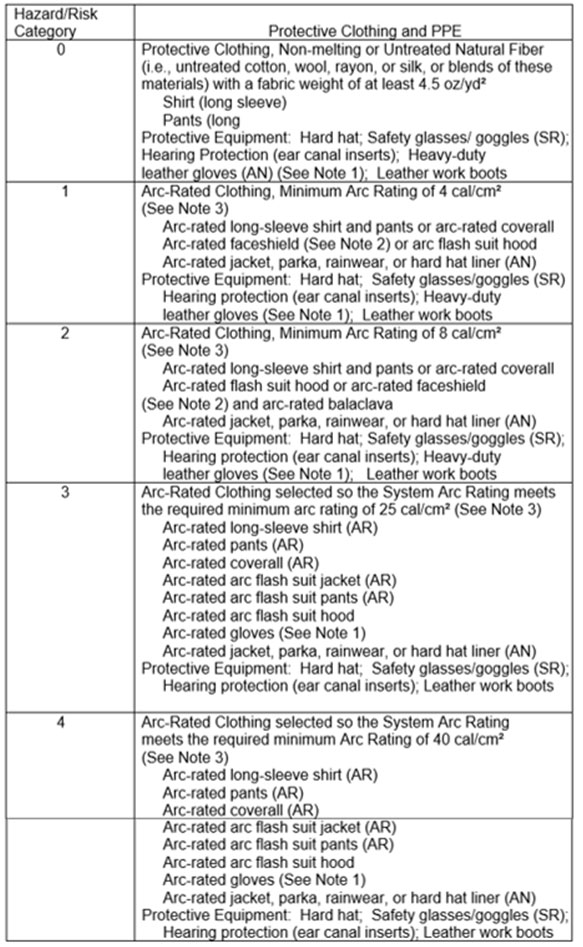

05.I.10 When using live-line tools, workers shall use voltage rated gloves and not place their hands closer than necessary to energized conductors or to the metal parts of the tool.
TABLE 5-6
Standards for Electrical Protective Equipment
TABLE 5-

AN: as needed (optional). AR: as required. SR: selection required.
Notes:
(1) If rubber insulating gloves with leather protectors are required by NFPA 70E
Table 130.7(C)(9), additional leather or arc-rated gloves are not required.
The combination of rubber insulating gloves with leather protectors satisfies the arc flash protection requirement.
(2) Face shields are to have wrap-around guarding to protect not only the face but also the forehead, ears, and neck, or, alternatively, an arc-rated arc flash suit hood is required to be worn.
(3) Arc rating is defined in Article 100 and can be either the arc thermal performance value (ATPV) or energy of break open threshold (EBT). ATPV is defined in ASTM F 1959, Standard Test Method for Determining the Arc Thermal Performance Value of Materials for Clothing, as the incident energy on a material, or a multilayer system of materials, that results in a 50 percent probability that sufficient heat transfer through the tested specimen is predicted to cause the onset of a second-degree skin burn injury based on the Stoll curve, in cal/cm2. EBT is defined in ASTM F 1959 as the incident energy on a material or material system that results in a 50 percent probability of breakopen. Arc rating is reported as either ATPV or EBT, whichever is the lower value.
05.I.11 Only tools and equipment intended for live-line bare hand work should be used on transmission lines. The tools shall be kept dry and clean and shall be visually inspected before use each day.
05.I.12 See Section{kind=link}
{kind=link}